1. Data Collection and Description: QB Attempts Per Game
Data is obtained from Pro Football Reference. In particular, the “Fantasy Ranks” page from 1970-2024 was scraped (see separate Jupyter notebook), e.g. 1970 Fantasy Ranks. Included on these pages is a wide variety of regular season statistics, including the number of passing attempts made by a player throughout the season and the number of games they started or participated in. Of particular interest here is the number of passing attempts per game among the top 15 quarterbacks sorted by total pass attempts. A few clarifying statements.
For a given season, quarterbacks are first ranked by the raw number of passing attempts they had. Even though we ultimately need to scale by number of games played, we want to exclude players not representative of consistent starting quarterbacks (e.g. someone who started one game but threw many passes).
The top 15 quarterbacks by total pass attempts are selected in order to capture roughly half the league.
The raw number of pass attempts is scaled by games played to account for the shift in regular season schedule length.
fantasy_data <-read.csv("fantasy_data.csv")years <-unique(fantasy_data$Year)avg_top15_by_year <-numeric(length(years))names(avg_top15_by_year) <- yearsfor (y in years) { category_year <-subset(fantasy_data, Year == y & FantPos =="QB") category_year <- category_year[order(category_year$Passing_Att, decreasing =TRUE), ] top15 <-head(category_year, 15) avg_among_top_15 <-mean(top15$Passing_Att / top15$Games_G) avg_top15_by_year[as.character(y)] <- avg_among_top_15}top_15_qb.att_ts <-ts(data = avg_top15_by_year, start =1970, frequency =1)ts.plot(top_15_qb.att_ts, main ="QB Attempts Per Game")
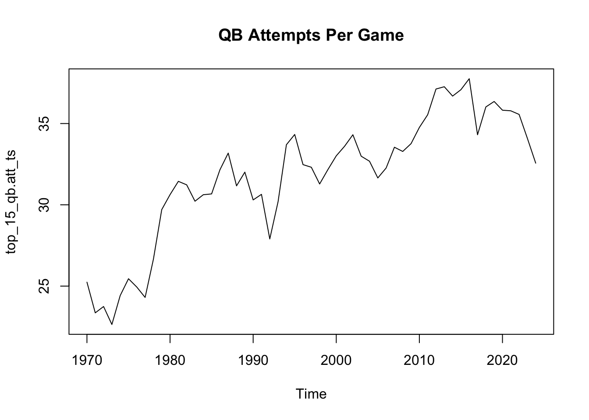
First observations about the data: values range between a minimum of 22.6381 attempts per game in 1973 and a maximum of 37.7581 in 2016; the time series is evidently nonstationary at least in the mean; there may be some periodic or seasonal dips, but it is difficult to say with certainty that they are not just noise.
2. Exploratory Data Analysis
Having visualized the series above, we want further confirmation that it is nonstationary. Our first effort in this direction is to plot the sample autocorrelation (ACF) function and partial autocorrelation (PACF) functions.
par(mfrow =c(1, 2))acf(top_15_qb.att_ts, main ="", ylim =c(-1, 1))pacf(top_15_qb.att_ts, main ="", ylim =c(-1, 1))
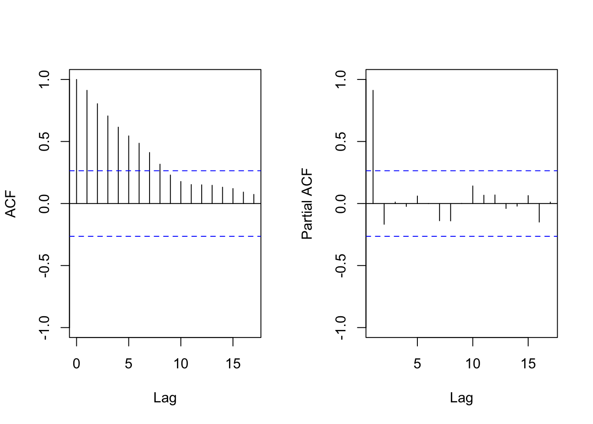
pacf(top_15_qb.att_ts, plot =FALSE)[1]
Partial autocorrelations of series 'top_15_qb.att_ts', by lag
1
0.912
The ACF does not decay quickly, with significant correlation values (according to the critical value envelope) as far as lag 8. Moreover, the PACF at lag 1 is 0.912, providing some further support of nonstationarity.
For now we will ignore the possibility of (conditional) heteroscedasticity. Instead, we proceed by first estimating the trend of the data and then fitting a model with seasonality modeled by trigonometric functions. Only later will we move toward a (S)ARIMA model.
3. Trend Regression and Harmonic Seasonality Model
We start with a simple model in which we fit the trend of the data using linear regression and estimate the seasonal component with trigonometric functions.
3.1 Model Selection: Estimate of Trend
Two methods for visualizing and/or identifying the trend of the data which we will employ here are moving average and linear regression. First, we utilize 3, 5, and 9-point moving averages to provide varying levels of smooth approximation to the data trend.
par(mfrow =c(3,1),mar =c(4, 4, 2.5, 2))# Moving Average of QB Att/G#ts.plot(top_15_qb.att_ts, ylab = "Att/G", main = "QB Historical Attempts Per Game")# 3 point MAx_movavg_3 <- stats::filter(top_15_qb.att_ts, sides =2, rep(1,3)/3)ts.plot(x_movavg_3, main ="3 point Moving Average")#5 point MAx_movavg_5 <- stats::filter(top_15_qb.att_ts, sides =2, rep(1,5)/5)ts.plot(x_movavg_5, main ="5 point Moving Average")#7 point MA#x_movavg_7 <- filter(top_15_qb.att_ts, sides = 2, rep(1,7)/7)#ts.plot(x_movavg_7, main = "7 point Moving Average")#One more for fun: 9 point MAx_movavg_9 <- stats::filter(top_15_qb.att_ts, sides =2, rep(1,9)/9)ts.plot(x_movavg_9, main ="9 point Moving Average")
The three plots reveal (to varying degrees) the generally positive trend or upward movement of attempts per game as the role of passing in the NFL has grown. It is interesting to note that even in the case of 9-point moving average, there are still discernible periods in which pass attempts has increased rapidly but then subsequently plateaued.
Next, for a more tangible representation of trend we will use standard regression techniques to fit four different models. To evaluate the predictive capabilities of each, we split the data into a training portion from 1970-2013 and a forecasting portion from 2014-2024.
#Create training and forecasting setsatt.g_train <-window(top_15_qb.att_ts, end=2013)num_fit <-length(att.g_train)att.g_fore <-window(top_15_qb.att_ts, start=2014, frequency =1)num_fore <-length(att.g_fore)#Create training df with t, t^2/2!, sqrt(t)train_trend_df <-tibble(t_fit =1:num_fit,t_sqfit = t_fit^2/factorial(2),t_cubefit = t_fit^3/factorial(3),t_sqrt =sqrt(t_fit))#Fit desired models: #(1) Linear - \beta_0 + \beta_1 t #(2) Quadratic - \beta_0 + \beta_1 t + \beta_2 t^2/2#(3) Cubic - \beta_0 + \beta_1 t + \beta_2 t^2/2 + \beta_3 t^3/3!#(4) Square root model - \beta_0 + \beta_1 \sqrt(t)mlr.line <-lm(att.g_train ~ t_fit, data = train_trend_df)mlr.quadr <-lm(att.g_train ~ t_fit + t_sqfit, data = train_trend_df)mlr.cubic <-lm(att.g_train ~ t_fit + t_sqfit + t_cubefit, data = train_trend_df)mlr.sqrt <-lm(att.g_train ~ t_sqrt, data = train_trend_df)
We examine the performance of each model and its residuals on the training set before considering forecast evaluation criteria.
summary(mlr.line)
Call:
lm(formula = att.g_train ~ t_fit, data = train_trend_df)
Residuals:
Min 1Q Median 3Q Max
-3.5347 -1.2746 -0.1186 1.5142 3.5134
Coefficients:
Estimate Std. Error t value Pr(>|t|)
(Intercept) 25.17395 0.58045 43.37 < 2e-16 ***
t_fit 0.24973 0.02247 11.12 4.35e-14 ***
---
Signif. codes: 0 '***' 0.001 '**' 0.01 '*' 0.05 '.' 0.1 ' ' 1
Residual standard error: 1.892 on 42 degrees of freedom
Multiple R-squared: 0.7463, Adjusted R-squared: 0.7403
F-statistic: 123.6 on 1 and 42 DF, p-value: 4.35e-14
The linear model takes the form \(25.1740 + 0.2497 t\), with the coefficient on the \(t\)-term being significant according to \(p\)-value. With an adjusted \(R\)-squared value of approximately 0.74, the model is able to explain 74% of the variance in attempts per game over time. Viewing diagnostic plots, we see some nonlinear aspect(s) of the trend have not been captured:
# Residual Diagnostic Plots for mlr.linpar(mfrow =c(2, 2), mar =c(4, 4, 2.5, 2)) # plot 4 figures, 2 in each of 2 rowsplot(mlr.line, main ="", which =1:4)
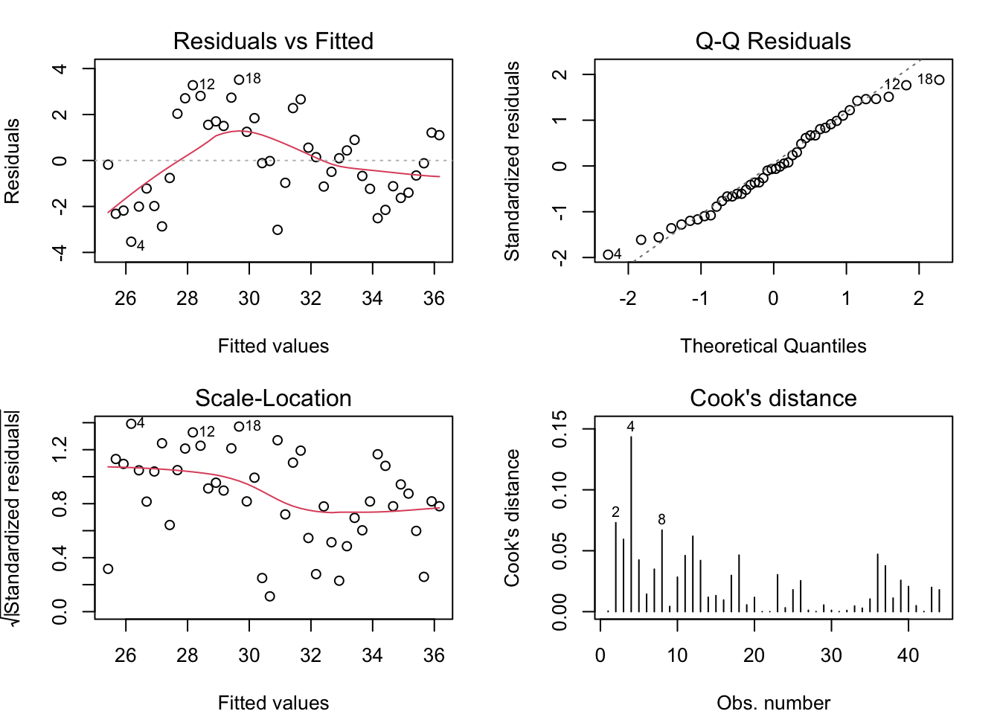
Next, we want to see if the quadratic model captures the nonlinearity of the trend any better than the linear model.
summary(mlr.quadr)
Call:
lm(formula = att.g_train ~ t_fit + t_sqfit, data = train_trend_df)
Residuals:
Min 1Q Median 3Q Max
-3.8942 -1.0353 -0.4776 1.2058 2.9964
Coefficients:
Estimate Std. Error t value Pr(>|t|)
(Intercept) 23.295867 0.821450 28.359 < 2e-16 ***
t_fit 0.494693 0.084199 5.875 6.51e-07 ***
t_sqfit -0.010887 0.003629 -3.000 0.00457 **
---
Signif. codes: 0 '***' 0.001 '**' 0.01 '*' 0.05 '.' 0.1 ' ' 1
Residual standard error: 1.734 on 41 degrees of freedom
Multiple R-squared: 0.792, Adjusted R-squared: 0.7818
F-statistic: 78.05 on 2 and 41 DF, p-value: 1.05e-14
The model takes the form \(23.2959 + 0.4947t-0.0109\left(\frac{t^2}{2}\right)\), with both coefficients being significant. The negative \(t^2\) term is expected, since the number of pass attempts per game in recent years has leveled off or even decreased slightly. The adjusted \(R\)-squared of 0.78 here shows a 4% improvement in variance explained. The same diagnostic plots from before still show patterns in the residuals.
# Residual Diagnostic Plots for mlr.quadrpar(mfrow =c(2, 2), mar =c(4, 4, 2.5, 2)) # plot 4 figures, 2 in each of 2 rowsplot(mlr.quadr, main ="", which =1:4)
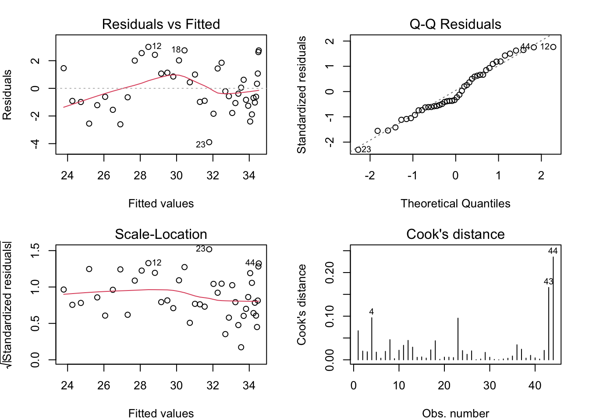
Next, the most complicated of the polynomial models: the cubic.
summary(mlr.cubic)
Call:
lm(formula = att.g_train ~ t_fit + t_sqfit + t_cubefit, data = train_trend_df)
Residuals:
Min 1Q Median 3Q Max
-3.8178 -0.9433 0.0475 1.0700 3.4094
Coefficients:
Estimate Std. Error t value Pr(>|t|)
(Intercept) 20.7301570 0.9974718 20.783 < 2e-16 ***
t_fit 1.1427528 0.1898141 6.020 4.42e-07 ***
t_sqfit -0.0820912 0.0194851 -4.213 0.000139 ***
t_cubefit 0.0031646 0.0008545 3.704 0.000642 ***
---
Signif. codes: 0 '***' 0.001 '**' 0.01 '*' 0.05 '.' 0.1 ' ' 1
Residual standard error: 1.515 on 40 degrees of freedom
Multiple R-squared: 0.8451, Adjusted R-squared: 0.8335
F-statistic: 72.74 on 3 and 40 DF, p-value: 3.001e-16
The model appears as \(20.7302 + 1.1428t-0.0821(t^2/2) + 0.0032(t^3/3!)\), where all coefficients are deemed significant. The adjusted \(R\)-squared of 0.83 indicates another 5% improvement in explained variance.
# Residual Diagnostic Plots for mlr.quadrpar(mfrow =c(2, 2), mar =c(4, 4, 2.5, 2)) # plot 4 figures, 2 in each of 2 rowsplot(mlr.cubic, main ="", which =1:4)
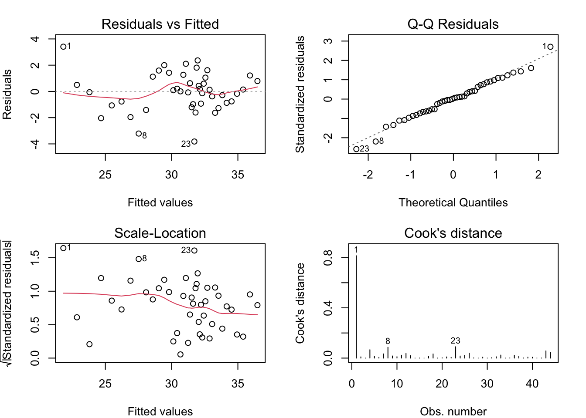
The diagnostic plots show a bit less structure, further supporting the strength of the model fit to the training set. Finally, we take a closer look at the model which includes a square root term and intercept.
summary(mlr.sqrt)
Call:
lm(formula = att.g_train ~ t_sqrt, data = train_trend_df)
Residuals:
Min 1Q Median 3Q Max
-3.5459 -1.1177 -0.1777 1.3928 2.9293
Coefficients:
Estimate Std. Error t value Pr(>|t|)
(Intercept) 21.1060 0.7939 26.59 < 2e-16 ***
t_sqrt 2.1560 0.1674 12.88 3.52e-16 ***
---
Signif. codes: 0 '***' 0.001 '**' 0.01 '*' 0.05 '.' 0.1 ' ' 1
Residual standard error: 1.689 on 42 degrees of freedom
Multiple R-squared: 0.798, Adjusted R-squared: 0.7932
F-statistic: 165.9 on 1 and 42 DF, p-value: 3.517e-16
This model has the functional form \(21.1060 + 2.1560\sqrt{t}\) with significant coefficients (\(p<<0.05\)). The adjusted \(R\)-squared of 0.79 is better than the linear or quadratic models, but not as strong as the cubic model.
# Residual Diagnostic Plots for mlr.sqrtpar(mfrow =c(2, 2), mar =c(4, 4, 2.5, 2)) # plot 4 figures, 2 in each of 2 rowsplot(mlr.sqrt, main ="", which =1:4)
The residuals still show a fairly distinct pattern. We can plot the prediction curves for each model, first with only the training data.
#Make plots showing fitted curves (4 plots)par(mfrow =c(2, 2), mar =c(4, 4, 2.5, 2))#Create a table with xfit and line fit models; access the fitted values using model$fittedplin <-cbind(att.g_train, mlr.line$fitted)#Use ts.plot on plin; specify the xfit plot is in black while model is in red ts.plot(plin, main="Linear", col=c("black", 'red'), ylab="Att/G")#Same idea for quadratic and cubic fits pquad <-cbind(att.g_train, mlr.quadr$fitted) ts.plot(pquad, main="Quadratic", col=c("black",'red'))pcub <-cbind(att.g_train, mlr.cubic$fitted) ts.plot(pcub, main="Cubic", col=c("black", 'red'), ylab ="Att/G")psqrt <-cbind(att.g_train, mlr.sqrt$fitted) ts.plot(psqrt, main="Square Root", col=c("black", 'red'))
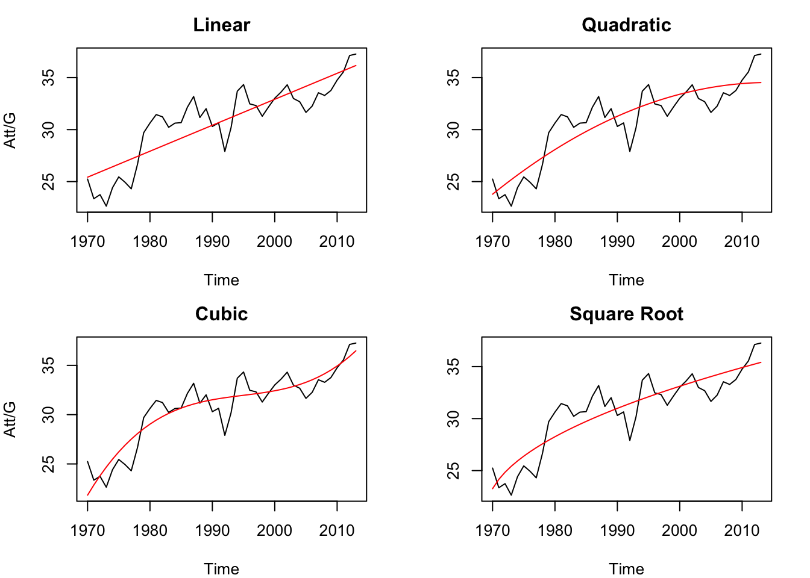
Visually the cubic trend model does capture the uptick in attempts from 2009-2013 better than the other models; however, we know that the seasons 2014-2024 do not continue to follow this pattern, so incorporating the forecast set will tell a different story.
trend_fore_df <-tibble(t_fit = (num_fit +1):(length(top_15_qb.att_ts)),t_sqfit = t_fit^2/factorial(2),t_cubefit = t_fit^3/factorial(3),t_sqrt =sqrt(t_fit))#Make dataframe of forecast times -- t only# use predict function pfore.lin <-predict(mlr.line, newdata = trend_fore_df, se.fit =TRUE)pfore.quad <-predict(mlr.quadr, newdata = trend_fore_df, se.fit =TRUE)pfore.cub <-predict(mlr.cubic, newdata = trend_fore_df, se.fit =TRUE)pfore.sqrt <-predict(mlr.sqrt, newdata = trend_fore_df, se.fit =TRUE)#Plot of time series with fits and out-of-sample forecasts# Linear Trend Model fits and forecastslinff <-c(mlr.line$fitted, pfore.lin$fit)# Quadratic Trend Model fits and forecastsquadff <-c(mlr.quadr$fitted, pfore.quad$fit)# Cubic Trend Model fits and forecastscubff <-c(mlr.cubic$fitted, pfore.cub$fit)#Sqrt trend model fits and forecastssqrtff <-c(mlr.sqrt$fitted, pfore.sqrt$fit)# observed data: top_15_qb.att_ts from 1970-2024 # Bind observed data and fits+forecastsobslin <-cbind(top_15_qb.att_ts, linff)obsquad <-cbind(top_15_qb.att_ts, quadff)obscub <-cbind(top_15_qb.att_ts, cubff)obssqrt <-cbind(top_15_qb.att_ts, sqrtff)par(mfrow =c(2,2), mar =c(4, 4, 2.5, 2))ts.plot(obslin, main ="Linear Trend Model", col =c("black", "blue"), ylab ="Att/G")abline(v =time(top_15_qb.att_ts)[num_fit], col ="red", lty ="dashed")ts.plot(obsquad, main ="Quadratic Trend Model", col =c("black", "blue"))abline(v =time(top_15_qb.att_ts)[num_fit], col ="red", lty ="dashed")ts.plot(obscub, main ="Cubic Trend Model", col =c("black", "blue"),ylab="Att/G")abline(v =time(top_15_qb.att_ts)[num_fit], col ="red", lty ="dashed")ts.plot(obssqrt, main ="Square Root Trend Model", col =c("black", "blue"))abline(v =time(top_15_qb.att_ts)[num_fit], col ="red", lty ="dashed")
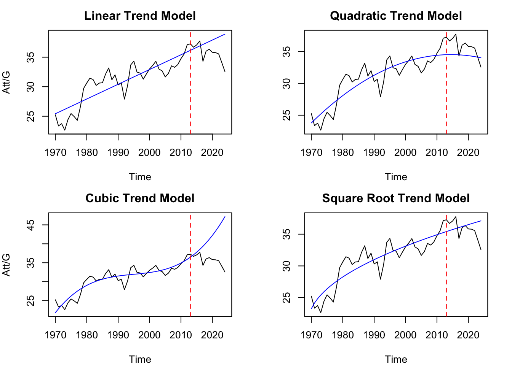
The red line in the plots above indicates the end of the training portion. As feared, the cubic model outgrows the data in the forecast portion, as does the linear model. The square root model does a somewhat better job because of its slower growth, and the quadratic model recognizes the downturn in the data. We can evaluate model forecast performance with standard metrics.
nfore <-length(att.g_fore)# Forecast/Prediction errors: Observed - Predictedefore.lin <- att.g_fore - pfore.lin$fitefore.quad <- att.g_fore - pfore.quad$fitefore.cub <- att.g_fore - pfore.cub$fitefore.sqrt <- att.g_fore - pfore.sqrt$fit# Forecast evaluation criteriame.lin <-mean(efore.lin) # Mean Errormpe.lin <-100*(mean(efore.lin/att.g_fore)) # Mean Percent Errormse.lin <-sum(efore.lin**2)/nfore # Mean Squared Errormae.lin <-mean(abs(efore.lin)) # Mean Absolute Errormape.lin <-100*(mean(abs((efore.lin)/att.g_fore))) # Mean Absolute Percent Error fec.lin <-data.frame(linear =rbind(me.lin, mpe.lin, mse.lin, mae.lin, mape.lin), row.names =c("me", "mpe", "mse", "mae", "mape"))# Forecast evaluation criteriame.quad <-mean(efore.quad) # Mean Errormpe.quad <-100*(mean(efore.quad/att.g_fore)) # Mean Percent Errormse.quad <-sum(efore.quad**2)/nfore # Mean Squared Errormae.quad <-mean(abs(efore.quad)) # Mean Absolute Errormape.quad <-100*(mean(abs((efore.quad)/att.g_fore))) # Mean Absolute Percent Error fec.quad <-data.frame(quadratic =rbind(me.quad, mpe.quad, mse.quad, mae.quad, mape.quad), row.names =c("me", "mpe", "mse", "mae", "mape"))# Forecast evaluation criteriame.cube <-mean(efore.cub) # Mean Errormpe.cube <-100*(mean(efore.cub/att.g_fore)) # Mean Percent Errormse.cube <-sum(efore.cub**2)/nfore # Mean Squared Errormae.cube <-mean(abs(efore.cub)) # Mean Absolute Errormape.cube <-100*(mean(abs((efore.cub)/att.g_fore))) # Mean Absolute Percent Error fec.cube <-data.frame(cubic =rbind(me.cube, mpe.cube, mse.cube, mae.cube, mape.cube), row.names =c("me", "mpe", "mse", "mae", "mape"))# Forecast evaluation criteriame.sqrt <-mean(efore.sqrt) # Mean Errormpe.sqrt <-100*(mean(efore.sqrt/att.g_fore)) # Mean Percent Errormse.sqrt <-sum(efore.sqrt**2)/nfore # Mean Squared Errormae.sqrt <-mean(abs(efore.sqrt)) # Mean Absolute Errormape.sqrt <-100*(mean(abs((efore.sqrt)/att.g_fore))) # Mean Absolute Percent Error fec.sqrt <-data.frame(sqroot =rbind(me.sqrt, mpe.sqrt, mse.sqrt, mae.sqrt, mape.sqrt), row.names =c("me", "mpe", "mse", "mae", "mape"))round(fec.lin, digits =4)
linear
me -2.0208
mpe -5.9087
mse 8.3657
mae 2.3018
mape 6.6606
round(fec.quad, digits =4)
quadratic
me 1.2727
mpe 3.4291
mse 3.2828
mae 1.5838
mape 4.3779
round(fec.cube, digits =4)
cubic
me -5.9244
mpe -17.0935
mse 54.2081
mae 5.9244
mape 17.0935
round(fec.sqrt, digits =4)
sqroot
me -0.7040
mpe -2.1818
mse 3.7380
mae 1.4953
mape 4.3051
According to these criterion, the square root and quadratic models have roughly the same forecast performance. We can also use information based criterion for model selection, e.g. the Akaike information criterion (AIC) or Bayesian information criterion (BIC).
AIC
Linear 181.9499
Quadratic 178.2156
Cubic 172.2424
Square Root 171.9216
Of these, the AIC model prefers the square root model. We will select the square root estimate of the trend, and next add in a seasonal component if it proves to be applicable.
3.2 Model Selection: Seasonal Component
We will use trigonometric functions to estimate any seasonal patterns in the data. For instance, it could be argued that the data goes through a repeating pattern every number of years, though it is not clear what that number of years is. With that in mind:
#Maximum period willing to considerper <-20for (n in1:per) { c1fit_0 <-cos(2* pi * train_trend_df$t_fit / n) s1fit_0 <-sin(2* pi * train_trend_df$t_fit / n) att.g_trig1 <-lm(att.g_train ~ train_trend_df$t_sqrt + c1fit_0 + s1fit_0)print(paste("n = ", n, "R^2 = ", summary(att.g_trig1)$adj.r.squared))}
The largest adjusted \(R\)-squared occurs for \(n=16\), indicating a period of 16 years. To see the full summary for this model, we rerun the same phrase but with fixed \(n=16\) and find that all coefficients are significant according to their \(p\)-values.
# Residual Diagnostic Plots for co2_trig1par(mfrow =c(2, 2), mar =c(4, 4, 2.5, 2)) # plot 4 figures, 2 in each of 2 rowsplot(att.g_trig1, main ="", which =1:4)
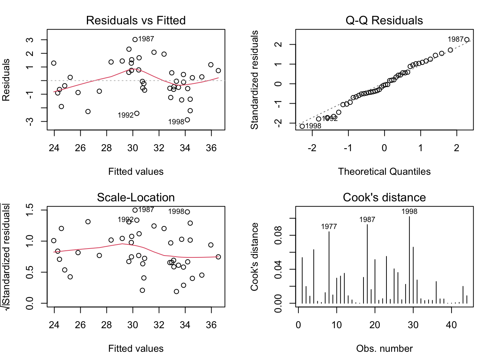
Several of the residuals (1998, 1987 in particular) of att.g_trig1 are highly influential, lending themselves to the consistent (though still expected) presence of structure in the residual plot. Before evaluating the performance of att.g_trig1 on the forecast set, it is reasonable to try including more harmonics to see if the trend, low-frequency harmonic (16 year period), and high-frequency harmonic(s) are more capable of describing the data.
It is possible to add many harmonic pairs of trigonometric functions, but of course a greater number of parameters reduces parsimony, increases the possibility of overfitting, and may not lead to a significant increase in explained variance. For these reasons we will fit a model denoted 1b with two harmonics and model 1c with three harmonics. Then, using \(F\)-tests plus information and forecast criterion, we will select the best model.
#Models 1b and 1c: 2 and 3 harmonicsseasonal_train_df <-tibble(#Harmonic 1t_sqrt = t_sqrt,t_fit = train_trend_df$t_fit,c1fit =cos(2* pi * t_fit / n_0),s1fit =sin(2* pi * t_fit / n_0), #Harmonic 2c2fit =cos(2* pi *2* t_fit / n_0),s2fit =sin(2* pi *2* t_fit / n_0),#Harmonic 3c3fit =cos(2* pi *3* t_fit / n_0),s3fit =sin(2* pi *3* t_fit / n_0))#Model 1aatt.g_trig1 <-lm(att.g_train ~ t_sqrt + c1fit + s1fit, data = seasonal_train_df)#Model 1batt.g_trig2 <-lm(att.g_train ~ t_sqrt + c1fit + s1fit + c2fit + s2fit, data = seasonal_train_df)#Model 1catt.g_trig3 <-lm(att.g_train ~ t_sqrt + c1fit + s1fit + c2fit + s2fit + c3fit + s3fit,data = seasonal_train_df)summary(att.g_trig2)
Per \(R\)-squared values, both Model 1b and Model 1c have improved performance over their subset counterparts. To determine whether this increase in explained variance is significant based on the added parameters, we can use the Extra Sum of Squares \(F\)-test. First, to compare Model 1a (one harmonic) with Model 1b (two harmonics), we have:
\[
\frac{\mbox{Extra SS / Extra DF}}{\mbox{MS Residuals Full}}=\frac{(13.38/2)}{1.68)}=3.9821
\]
This is compared with the \(F\)-critical value, which may be computed using qf(0.95, Extra DF, DF Residuals Full):
qf(0.95, 2, 38)
[1] 3.244818
Since \(3.9821>3.2448\), we reject the null hypothesis (i.e. we reject that the addition of a second harmonic was insignificant), and thus prefer Model 1b to Model 1a. Repeating the same calculations with Model 1c as the full model:
\[
\implies \frac{\mbox{Extra SS / Extra DF}}{\mbox{MS Residuals Full}}=\frac{(7.82/2)}{1.56)}=2.50641
\]
qf(0.95, 2, 36)
[1] 3.259446
Since \(2.5064<3.2594\), the Extra SS \(F\)-test does not prefer Model 1c over 1b. This points us toward Model 1b. For completeness, we include plots depicting the predicted values from all three models as well as a version zoomed in on the end of the training set.
par(mfrow =c(2, 1), mar =c(4, 4, 2.5, 2)) plot(att.g_train, xlab ="Time", ylab ="Att/G",main ="Attempts Over Time")lines(ts(att.g_trig1$fit,start=1970,freq=1),col="blue", lty ="dashed", lwd =2)lines(ts(att.g_trig2$fit,start=1970,freq=1),col="red", lty ="dotted", lwd =2)lines(ts(att.g_trig3$fit,start=1970,freq=1),col="green", lty ="dotdash", lwd =2)### Zoom in on the last five years of training dataplot(window(att.g_train, start=2009), xlab ="Time", ylab ="Att/G",main ="2009 - 2013 Window")lines(window(ts(att.g_trig1$fit, start=1970, freq=1),start=2009), col ="blue", lty ="dashed", lwd =2)lines(window(ts(att.g_trig2$fit, start=1970, freq=1),start=2009), col ="red", lty ="dotted", lwd =2)lines(window(ts(att.g_trig3$fit, start=1970, freq=1),start=2009), col ="green", lty ="dotdash", lwd =2)
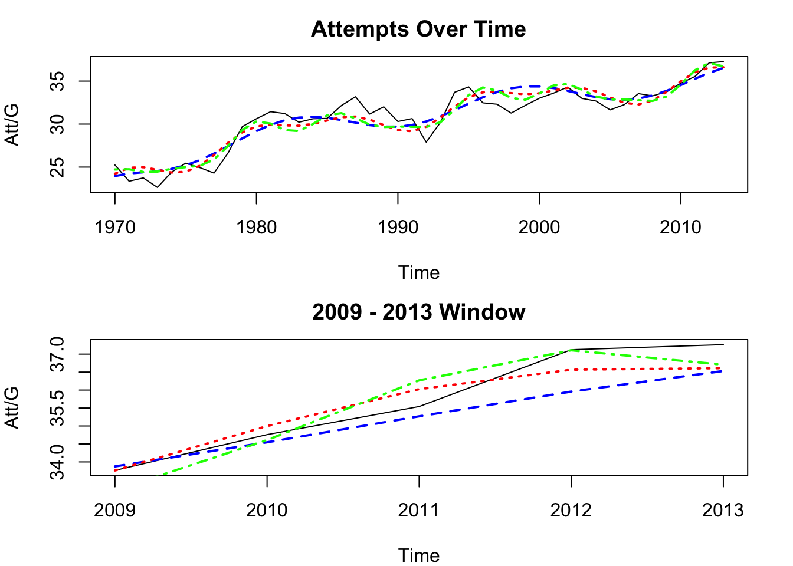
Next, we compare the models using AIC, AICc, and BIC.
num_fit <-length(att.g_train)k1 <-length(coef(att.g_trig1))k2 <-length(coef(att.g_trig2))k3 <-length(coef(att.g_trig3))# Information criteria# Verify with each anova tablesigsq.1a <-summary(att.g_trig1)$sigma^2sigsq.1b <-summary(att.g_trig2)$sigma^2sigsq.1c <-summary(att.g_trig3)$sigma^2# AICAIC.1a <-AIC(att.g_trig1)AIC.1b <-AIC(att.g_trig2)AIC.1c <-AIC(att.g_trig3) # Or use AIC(logLik(co2.model1a))# Or use AIC(logLik(co2_trig1)) # Or use AIC(logLik(co2_trig2))# Corrected AICAICc.1a <- AIC.1a + (2*k1^2+2*k1)/(num_fit - k1 -1)AICc.1b <- AIC.1b + (2*k2^2+2*k2)/(num_fit - k2 -1)AICc.1c <- AIC.1c + (2*k3^2+2*k3)/(num_fit - k3 -1)# BICBIC.1a <-BIC(att.g_trig1)BIC.1b <-BIC(att.g_trig2)BIC.1c <-BIC(att.g_trig3)IC.1a <-data.frame(model1a =rbind(AIC.1a, AICc.1a, BIC.1a), row.names =c("AIC", "AICc", "BIC"))IC.1b <-data.frame(model1b =rbind(AIC.1b, AICc.1b, BIC.1b), row.names =c("AIC", "AICc", "BIC"))IC.1c <-data.frame(model1c =rbind(AIC.1c, AICc.1c, BIC.1c), row.names =c("AIC", "AICc", "BIC"))round(cbind(IC.1a, IC.1b, IC.1c), digits =4)
Interestingly, Model 1a is decently strong, with the best MAPE and MAE. Model 1b claims the superior MSE, while Model 1c produces the best ME and MPE. To see the corresponding plots:
# Plot of time series with fits and out-of-sample forecasts# Model 1a fits and forecastsff.1a <-ts(pfore.1a$fit,start =start(att.g_fore),frequency =frequency(att.g_fore))ff.1b <-ts(pfore.1b$fit,start =start(att.g_fore),frequency =frequency(att.g_fore))ff.1c <-ts(pfore.1c$fit,start =start(att.g_fore),frequency =frequency(att.g_fore))# Plotts.plot(cbind(att.g_fore, ff.1a, ff.1b, ff.1c), main ="Attempts Per Game: 2014-2024", ylab ="Att/G",col =c("black", "blue", "red", "green"), lwd =2,lty =c("solid", "dashed", "dotted", "dotdash"))
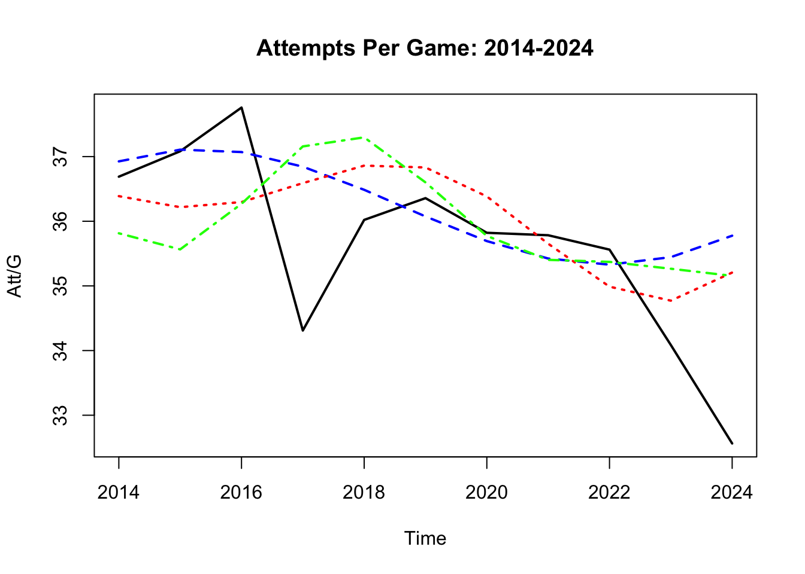
None of the models seems to follow what happens with the data beyond the training set, which is not surprising given the sizeable downturn after 2016. We will next explore a different model class.
4. Smoothing with Holt-Winters
We can use Holt-Winters exponential smoothing to estimate the level and trend of the data, though not with a seasonal parameter because our data is annual (frequency 1). Attempts with and without damping are made.
library(forecast)# Attempt to damphw.damped <-holt(att.g_train, damped=TRUE, h=11)#Undampeddexp.smooth <-HoltWinters(att.g_train, gamma = F) #Forecast values with interval about themdexp.fore <-predict(dexp.smooth, 11, prediction.interval =TRUE)dexp.damped.fore <-predict(hw.damped, 11, prediction.interval =TRUE)#Visualize resultplot(dexp.smooth, dexp.fore, xlab ="time", ylab ="Att/G", ylim =c(18, 70), main ="Attempts Over Time: Holt Forecast")lines(2014:2024, hw.damped$mean, col ="orange", lwd =2)lines(2014:2024, hw.damped$lower[,2], col ="navy", lty =2)lines(2014:2024, hw.damped$upper[,2], col ="navy", lty =2)lines(x =1970:2024, y = top_15_qb.att_ts)
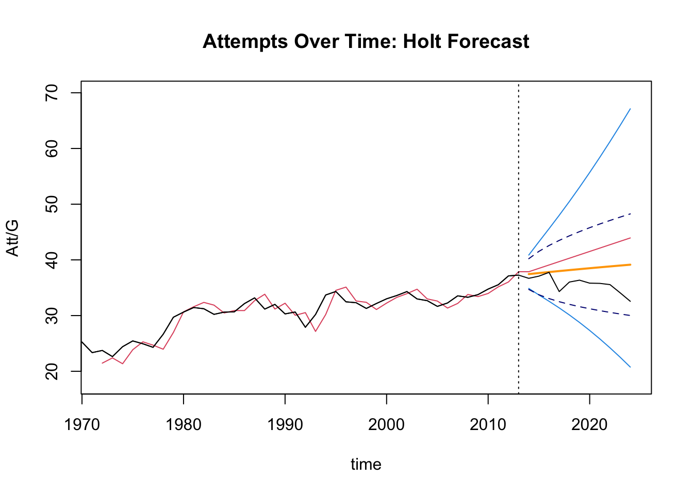
Unfortunately, the trend from ~ 2005-2013 is captured by both models and then extended in some fashion for 2014-2024, which does not match reality. The predicted values for the undamped model are depicted in red, with solid light blue confidence intervals. The forecast values for the damped model are displayed in orange, with dark blue dashed confidence intervals.
5. Conclusions
While there is a distinct increasing trend \(\sim\sqrt{t}\) in the number of attempts per game among the top fifteen passers of the ball each year, periodicity of this phenomenon is more difficult to conclusively identify. In a future work, one might consider the use of an ARIMA-type model, in particular ARIMA(0,1,0), as this small data set resembles a random walk in some respects. Indeed, we part with: